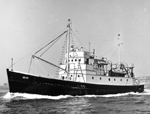

|  copyright - WHOI |
|
Built during WWII as a troop carrier in the South Pacific, Bear
was chartered by WHOI in 1951 and purchased in 1952. The vessel made 192
cruises in the western North Atlantic, venturing as far east as Bermuda.
Bear made acoustic, bathymetric and seismic measurements, and participated
in fish observations.
The vessel was sold in 1963 to a New Bedford fisherman and refitted as
a scalloper.